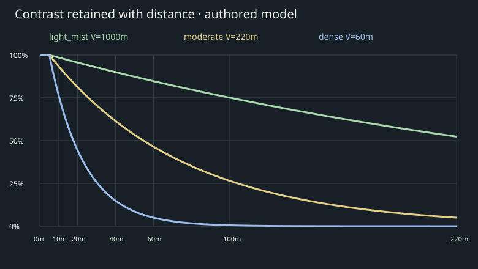

Morning fog · Style B
Seven phone-size concept views. Each image is390px wide; compare distance cues, dampness and soft glow. Values are authored proposals, not observed weather or measured pixel matches.
Design notes · Exact values · Sources · Prompts
Street densities
Scroll sideways for three views at full phone width.Aerial fog → lifting
Exact contrast curves

Illustrative Chicago lakefront, approximate source layouts elsewhere. No engine implementation or device performance pass.